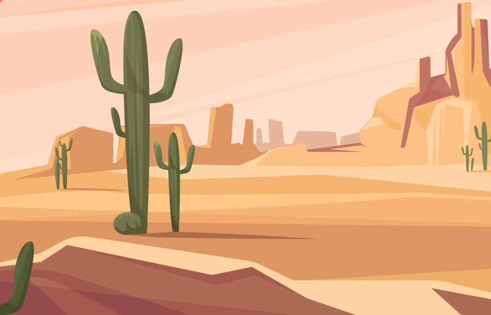

Grafik
Skitse af setting
Skitser af natur elementer
Skitser af dyr
Stiludgangspunkt
Flat Design 2
Gør figur/karakterdesignet brug af: Solid drawing? Asymmetri? Baby bias? (Eller er der andet du lægger mærke til ved figurdesignet, som du vil overføre til dit eget design?). Flat design gør meget brug af simple figure med få detaljer, meget geometriske, jeg vil gerne lave bløde figurer. Der er ikke baby bias nødvendigvis da øjnene er simple sorte prikker, men det kan man justere på ved hjælp af f.eks øjenvipper eller at lave figurene bløde og Bouba agtige.
Hvordan er formgivningen? Bærer figurerne præg af at være computer-genereret? Ligner det noget, der er klippet ud i hånden med en saks? Eller er der andre tydelige særpræg, der kan beskrive stilens formgivning? De er meget tydeligt computer generet da de er for perfekte til at være menneske tegnet, hvilken min stil vil være præget af. Og de har ingen outline hvilket jeg vil tage i brug, til at gøre min stil blød.
Vil du overføre farver fra den stil du har valgt, eller vil du bruge andre farver? Jeg vil bruge atmosfærisk perspektiv. Jeg vil bruge kolde farver i baggrunden og varme farver i mellemgrund og forgrund for at vise dybde, samt stærke kontraster for at fremhæve fokuspunktet og elementerne der er klikbare. Jeg vil også bruge skygger for at vise ydeligere dybde i min setting.
Stil inspiration

Papirprototype
Baggrund inspiration
Baggrunden var nok det sværeste at lave, så her fandt jeg meget inspo. Jeg ville lave flat design, men uden at det så kedeligt og ikke-dimensionelt ud
Illustrator elementer

Her er alle mine elementer, og alle mine skærme samt baggrund/mellemgrund/forgrund.
Illustrator lag
Jeg benyttede mig meget af geometriske former, mine dyr har mange cirkler, elipser osv. Dette hjalp mig også med at holde Flat Design stilen.
Skygger
Når jeg skulle lave skygger på ting, kopierede jeg genstanden, brugte transform: Reflect toolet for at spejlvende det, og afhængig af om det var skygge på jorden eller skygge på objektet skiftede jeg farven, og scalede det ned så det passede og groupede tingene jeg havde lavet. Her benyttede jeg mig også meget af toolet Color Guide, der giver en shade farver og kommer med andre farveforeslag.